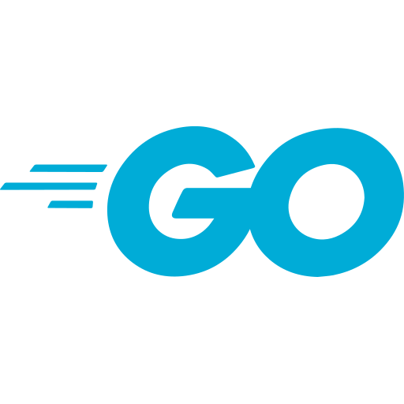
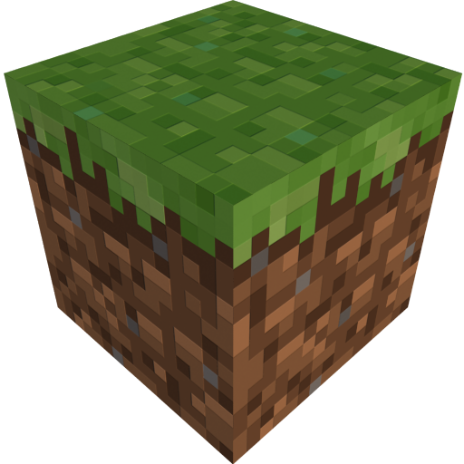

#Projects
##Sammy
Web-reconnaissance and security tool
- Python
- Web
- Security

- Built multi-threaded directory brute-forcer with configurable concurrency and progress tracking
- Implemented web crawler with session management, cookie persistence, and interactive shell for site navigation
- Designed regex-based HTML parsing for extracting hidden fields, comments, and linked resources
- Implemented an automated report feature which generates a readable summary based on the analysis.
- Published as Python package with proper documentation and error handling.
Sammy was built because when I used to solve web-related challenges in CTFs, I had to fire up a lot of different tools. I wanted a tool which had the functionality of all of them, not necessarily of the same quality, but "just enough" to get the work done.
Using ThreadPoolExecutor for multithreaded directory busting was both a good and a bad idea. Because of multithreading, the directory busting was incredibly fast, but the higher the number of threads, the higher was the compute. I later solved this problem by completely rewriting Sammy in Go, and giving birth to SammyGo.
##Planck
A minimal scripting language designed to be embedded
- C
- Systems

Building a lightweight interpreted scripting language with a minimal instruction set.
Planck was originally designed as a scripting engine for BASED (Basic Automated Shell for Embedded Devices), a custom embedded shell firmware for microcontrollers. It is heavily inspired from the RISC-V instruction set.
- Has a minimal instruction set of <10 instructions, while still aiming to be Turing complete via conditional jumps and arithmetic.
- No heap allocations are done during the execution of a Planck program. This is done to avoid fragmentation of memory in microcontroller environments.
- The interpreter's compiled code footprint is under 3KB.
Planck was created to fulfil the need for a scripting language for my ESP32 userland firmware, BASED. I needed a language with a minimal interpreter, so that I could run short scripts while being inside the firmware. The interpreter had to be really small, as the ESP only had 400KB of SRAM.
I am still working on this project, implementing a label system, along with loops and conditionals for turing completeness.
##BASED
A userland to interact with microcontrollers
- C
- Systems
Basic Automated Shell for Embedded Devices
Building a lightweight and minimal userland to interact with microcontrollers. BASED was designed originally to interact with an ESP32 C3-Supermini, which has FreeRTOS as a kernel, but no interactive interface to work with it.
The goal of BASED was to be minimal enough to run on 400KB of SRAM with 160MHz of clock speed of the ESP32 C3-supermini, and still be functional enough for file management, scripting, and interactive use.
- Supports writing and executing programs written in a custom-made scripting language with a minimal instruction set (Planck).
- Implements minimal versions of usual Unix-like commands from scratch, like echo, cd, ls, cat etc.
- Supports creating text files using a built-in text-editor called "base"
- The complete firmware (including the Planck interpreter) has a compiled code footprint of ~8KB with zero heap allocation to prevent fragmentation of memory and unpredictability of the required memory of the program.
BASED was born out of my interest in the RISC-V architecture, while I was taking the course "Computer Systems Organization". I bought an ESP32 with a RISC-V core, so I could write my assembly programs directly on the metal. I soon realised that I can do any kind of compute with a processor, and what I needed was a way to interact with the firmware of the ESP32, FreeRTOS. Hence, BASED was born. The end goal was to solve a CodeForces question, completely on the firmware.
I am still working on the project, improving the text editor, "base" and "Planck", the scripting language, both of which are essential for the working of BASED.
##SammyGo
Rewrite of Sammy in Go
- Go
- Web
- Security

SammyGo is a web reconnaissance and security testing tool.
Rewriting "Sammy" (web-recon tool) in Golang.
- Cleaning up and and modularizing code
- Utilizing goroutines for faster and efficient directory busting, as compared to ThreadPoolExecutor in Python.
SammyGo is the reincarnation of Sammy. Some previous mistakes are resolved in this iteration. The motivation behind rewriting Sammy was to have a blazing fast directory buster. I was searching for alternatives, and I found Go, and of course, goroutines. Go seemed to be a fun language, and a very useful one too. Hence, I learned Go, initially with the sole purpose of rewriting Sammy. Consequently, I found a love for Go, and am looking forward to do more projects in this wonderful languag Consequently, I found a love for Go, and am looking forward to do more projects in this wonderful language.
I am still working on SammyGo, implementing the web crawler, and Sammy's flagship feature, the automatic report generation.
##Cryppy
Quick online decrypter tool
- Python
- Web
- Security
- Linguistics
Cryppy is an online tool for quickly decrypting encrypted strings.
Cryppy predicts the type of encryption based on pattern recognition, decrypts the string and presents the valid results.
- Core engine made using Python, and packaged to a web app using FastAPI.
- Full server-side rendering using Jinja2 templates.
- Containerised using Docker and deployed using HuggingFace Spaces.
- Regex-based pattern recognition for encryptions.
- Validation of results based on the type of unicode characters.
Cryppy was created as a need for a universal tool for decryption, in cryptography challenges in CTFs. Recognising a string of encrypted text, and then going to websites to decrypt that specific encryption was tedious. Hence, Cryppy features automatic detection and decryption, all from a click of a single button. Cryppy is special to me, as it is my first project which is dockerised and deployed to the web. I also learned FastAPI during the creation of this project.
I am still working on Cryppy, implementing a human-readable text recognition system, which is essential for quick results. Testing various machine learning and computational linguistic techniques to get the best results, including n-grams and RNNs.
##Notex
Classless CSS framework focused at minimalism
- CSS
- Web

Notex (pronounced as "Notek") is a classless CSS framework, which turns semantic HTML to elegantly-styled pages.
Notex was originally created for my project demos and articles, where I had to spend time styling the page, rather than focusing on the content itself.
The name originated from a joke that the HTML pages are not LaTeX, hence "No TeX".
- Supports multiple color themes.
- Accessible over the CDN using jsDelivr.
- Fully responsive on all screen sizes.
Notex was born in the process of creating Cryppy. Since Cryppy was my first project deployed to web, I could foresee many projects being deployed in the near future. Hence, I needed a quick but consistent styling in all of my projects' web demonstrations. Hence, Notex was created so I could just drop a single CDN tag and get my semantic HTML fully styled at the press of a key.
I am still working on Notex, implementing styling for input elements.
##Knolfetch
An API-based research fetcher
- Go
- Web
Building a CLI-tool to fetch the latest research from arxiv.org
Knolfetch is like fastfetch, but for researchers. It fetches the latest researches from arxiv.org and dumps them into the terminal, with a clean formatting. I created Knolfetch originally so I could see the recent advances in my field whenever I open the CLI (setting Knolfetch as a startup script).
- Periodic fetch cycle to create cache, preventing API wait times during program execution.
- Completely customizable using a configuration file, including research categories, and visibility of individual elements for each category.
Knolfetch was born one day when I sat staring at my fastfetch output, and reconsidering my life choices. I wanted something more useful to me. I though about the usefulness of the latest advances in my research fields, dumped directly in my terminal. Hence, I created Knolfetch, a replacement of fastfetch, at least for me.
Knolfetch is complete as of now, but I may push more updates. I really wanted a logo like fastfetch, but the matter of the research papers take a lot of space, and a logo does not seem practical.
##RedKnot
A dependency graph visualiser
- Python
- Linguistics
Built a Python-based CLI tool that parses C codebases to generate directed dependency graphs using Mermaid.js. Developed and published as a PyPI package with 500+ downloads.
- Regex based checking for file imports
- Implemented a mermaid.js code generator based on the dependency lists
- Helpful to visualize dependency errors such as circular dependencies
RedKnot was created when I wanted to visualise how the different files of my C project (which was the course project for the course "Computer Programming") connect.
I am still working on the project, with some plans to support more languages, including Python and Java.
##TSim
A string similarity quantifier and OCR corrector
- Python
- Linguistics
Developed a Python-based utility to resolve orthographic variances in person-name data. Focused on reducing noise in user-generated strings through a multi-layered normalization pipeline.
Packaged and Published on PyPI with 100+ downloads.
- Orthographic Normalization: Implemented a custom OCR-correction mapping to resolve character-substitution errors (e.g., 5 → S).
- Token-Level Determinism: Leveraged alphabetical token sorting to neutralize word-order permutations (e.g., "Last, First" vs "First Last").
- Fuzzy Logic: Applied string-distance metrics to quantify similarity confidence, handling typos and abbreviations effectively.
TSim was born when I was given the task to validate the uploaded names of people with their uploaded IDs, during my tenure as a Research Assistant at the Division of Flexible Learning, IIIT-H. I encountered a lot of issues with the OCR, and the general structuring of names, where someone would put their last name first on some places, and the contrary on some other places. Hence, I made TSim to compensate for the name ordering and OCR errors.
Though the project is complete, I think that the codebase and the APIs could've been better. The code is messy right now, and the algorithm used for checking the similarity is completely custom made, but is held together by duct tape.
##TSim
A string similarity quantifier and OCR corrector
- Python
- Linguistics
Developed a Python-based utility to resolve orthographic variances in person-name data. Focused on reducing noise in user-generated strings through a multi-layered normalization pipeline.
Packaged and Published on PyPI with 100+ downloads.
- Orthographic Normalization: Implemented a custom OCR-correction mapping to resolve character-substitution errors (e.g., 5 → S).
- Token-Level Determinism: Leveraged alphabetical token sorting to neutralize word-order permutations (e.g., "Last, First" vs "First Last").
- Fuzzy Logic: Applied string-distance metrics to quantify similarity confidence, handling typos and abbreviations effectively.
TSim was born when I was given the task to validate the uploaded names of people with their uploaded IDs, during my tenure as a Research Assistant at the Division of Flexible Learning, IIIT-H. I encountered a lot of issues with the OCR, and the general structuring of names, where someone would put their last name first on some places, and the contrary on some other places. Hence, I made TSim to compensate for the name ordering and OCR errors.
Though the project is complete, I think that the codebase and the APIs could've been better. The code is messy right now, and the algorithm used for checking the similarity is completely custom made, but is held together by duct tape.
##Mactrics
A optimization modpack for Minecraft, aimed at Apple Silicon
- Minecraft

How does it work?
Apple Silicon neither supports OpenGL nor Vulkan out of the box. Apple Silicon uses Metal API. However, Vulkan calls can be translated to Metal calls using a translation layer called MoltenVK (Which VulkanMod is bundled with). Vulkan performs better with Metal due to its modern architecure as opposed to OpenGL.
What is the purpose of Mactrics?
Due to VulkanMod using an entirely different renderer than OpenGL, it breaks many existing mods. In such a case, finding compatible mods which work well together to give a performance boost becomes difficult. Mactrics has an assortment of mods from well known developers and the non-compatibility taken care of so you don't have to get into the hassle of incompatibilities.
Does it support shaders?
Vulkan API is not as prevalent in the Minecraft community right now as OpenGL is. As a result, the shaders are almost always written for OpenGL, rather than Vulkan. Hence, there is no shader support when using Vulkan (at the moment).
I made Mactrics when I got my new MacBook Air M4, and I wanted to optimize it to the fullest, so I could run Minecraft at crazy frames. I gathered all of my Minecraft optimization mod knowledge I had gathered over the years, and compiled them into this modpack. Minecraft runs at a stable 500 FPS on my Mac now.
Consistently updating and keeping up with the latest versions of mods and Minecraft.